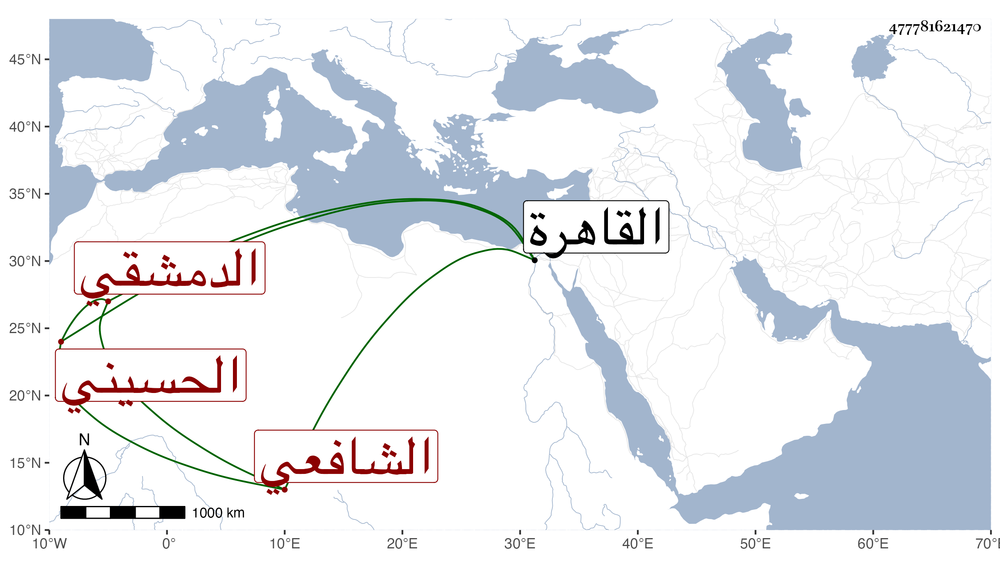

0902Sakhawi.DawLamic.ITO20230111-ara1.EIS1600.477781621470
Biography ID: 477781621470
371
محمد بن علي بن إبراهيم بن عدنان بن جعفر بن محمد بن عدنان بن جعفر ناصر الدين ابن كاتب السر الحسيني الدمشقي الشافعي . قال شيخنا في أنبائه : كان فاضلا ماهرا في الأنساب كثير الاشتغال إلا أنه جامد الذهن ولم يكن ممن يتعانى الملابس والمراكب بل كان كثير التقشف متهما بالتشيع مع تبرئه منه أعجوبة في زمانه في السعي كثير الدهاء ، سمع معنا كثيرا وكانت بيننا مودة ودخل القاهرة مرارا بسبب السعي لأبيه في كتابة السر فكان غالبا هو الغالب ، وفي غضون ذلك حصل لنفسه كثيرا من الوظائف والتداريس والأنظار . قال ابن حجي : كان دينا صينا لا تعرف له صبوة وقد عين لكتابة السر فلم يتفق . وقال شيخنا في معجمه : كان يتقشف ويقتصد في ملبوسه ومركوبه مع الدين المتين والبشاشة ، وهو في عقود المقريزي . مات في صفر سنة أربع عشرة بالطاعون عن سبع وثلاثين سنة .
